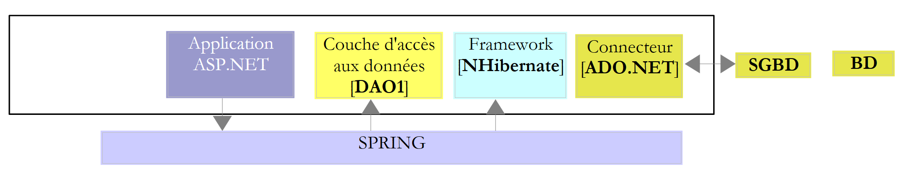

1. مقدمة
1.1. الهدف
ملف PDF للوثيقة متاح |هنا|.
الأمثلة الواردة في المستند متاحة |هنا|.
Entity Framework هو ORM (Object Relational Mapper) تم إنشاؤه في الأصل بواسطة Microsoft وهو متاح الآن كمصدر مفتوح [يوليو 2012، http://entityframework.codeplex.com/]. في دورة ASP.NET، أستخدم البنية التالية لتطبيق ويب معين:
 |
يعد إطار عمل NHibernate [http://sourceforge.net/projects/nhibernate/] نموذج ORM أقدم من Entity Framework. وهو منتج ناضج يتيح لك الاتصال بقاعدة بيانات متنوعة. يعزل ORM طبقة [DAO] (كائنات الوصول إلى البيانات) عن موصل ADO.NET. وهو ORM الذي يصدر أوامر SQL إلى الموصل. بدورها، تستخدم طبقة [DAO] الواجهة التي يوفرها ORM. تعتمد هذه الواجهة على ORM. لذلك، يتطلب تغيير ORM تغيير طبقة [DAO].
هذه البنية مرنة تجاه التغييرات في نظام إدارة قواعد البيانات (DBMS).
عندما تكون طبقة [DAO] متصلة مباشرة بموصل ADO.NET، يؤثر تغيير نظام إدارة قواعد البيانات (DBMS) على طبقة [DAO]:
- لا تحتوي جميع أنظمة إدارة قواعد البيانات (DBMS) على نفس أنواع البيانات؛
- لا تستخدم أنظمة إدارة قواعد البيانات (DBMS) نفس الاستراتيجيات لإنشاء المفاتيح الأساسية؛
- تستخدم أنظمة إدارة قواعد البيانات لغة SQL خاصة بها؛
- قد تكون طبقة [DAO] قد استخدمت مكتبات مرتبطة بنظام إدارة قواعد البيانات (DBMS) معين؛
- ...
عند توصيل ORM بموصل ADO.NET، فإن تغيير نظام إدارة قواعد البيانات (DBMS) يتطلب ببساطة تكوين ORM للتكيف مع نظام إدارة قواعد البيانات الجديد. وتبقى طبقة [DAO] دون تغيير.
يضمن إطار عمل Spring.NET [http://www.springframework.net/index.html] تكامل طبقات التطبيق. أعلاه:
- يطلب تطبيق ASP.NET مرجعًا لطبقة [DAO] من Spring؛
- يستخدم Spring ملف تكوين لإنشاء هذه الطبقة وإرجاع المرجع.
تتعامل هذه البنية مع تغييرات الطبقات بشكل جيد طالما استمرت الطبقات في عرض نفس الواجهة. يتطلب تغيير طبقة [DAO] أعلاه تعديل ملف تكوين Spring بحيث يتم إنشاء مثيل للطبقة الجديدة بدلاً من القديمة. نظرًا لأن كلا الطبقتين تنفذان نفس الواجهة وتستخدم طبقة ASP.NET هذه الواجهة، تظل طبقة ASP.NET دون تغيير.
لذلك لدينا هنا بنية مرنة وقابلة للتوسع. لتوضيح ذلك، سنستبدل NHibernate ORM بـ Entity Framework 5:
 |
سنمضي قدماً في عدة خطوات:
- سنستكشف Entity Framework 5 مع عدة أنظمة إدارة قواعد البيانات (DBMS)؛
- سنقوم ببناء طبقة [DAO2]؛
- سنقوم بربط تطبيق ASP.NET الحالي بهذه الطبقة [DAO] الجديدة.
1.2. الأدوات المستخدمة
أُجريت الاختبارات على جهاز كمبيوتر محمول من طراز HP EliteBook يعمل بنظام التشغيل Windows 7 Pro، ومزود بمعالج Intel Core i7 وذاكرة وصول عشوائي (RAM) سعة 8 جيجابايت. وسنستخدم لغة البرمجة C#.
يستخدم هذا المستند الأدوات التالية، وجميعها متاحة مجانًا:
بيئات تطوير متكاملة (IDE):
- Visual Studio Express for Desktop 2012 [http://www.microsoft.com/visualstudio/fra/downloads]؛
- Visual Studio Express for Web 2012 [http://www.microsoft.com/visualstudio/fra/downloads].
نظام إدارة قواعد البيانات SQL Server Express 2012:
- نظام إدارة قواعد البيانات: [http://www.microsoft.com/fr-fr/download/details.aspx?id=29062]؛
- أداة إدارة: EMS SQL Manager for SQL Server Freeware [http://www.sqlmanager.net/fr/products/mssql/manager/download].
نظام إدارة قواعد البيانات Oracle Database Express Edition 11g Release 2:
- نظام إدارة قواعد البيانات: [http://www.oracle.com/technetwork/products/express-edition/downloads/index.html]؛
- أداة إدارة: EMS SQL Manager for Oracle Freeware [http://www.sqlmanager.net/fr/products/oracle/manager/download]؛
- عميل Oracle لـ .NET: ODAC 11.2 الإصدار 5 (11.2.0.3.20) مع أدوات Oracle Developer Tools لـ Visual Studio: [http://www.oracle.com/technetwork/developer-tools/visual-studio/downloads/index.html].
نظام إدارة قواعد البيانات MySQL 5.5.28:
- نظام إدارة قواعد البيانات: [http://dev.mysql.com/downloads/]؛
- أداة إدارة: EMS SQL Manager for MySQL Freeware [http://www.sqlmanager.net/fr/products/mysql/manager/download].
نظام إدارة قواعد البيانات PostgreSQL 9.2.1:
- نظام إدارة قواعد البيانات: [http://www.enterprisedb.com/products-services-training/pgdownload#windows]؛
- أداة إدارة: EMS SQL Manager for PostgreSQL Freeware [http://www.sqlmanager.net/fr/products/postgresql/manager/download].
نظام إدارة قواعد البيانات Firebird 2.1:
- نظام إدارة قواعد البيانات: [http://www.firebirdsql.org/en/firebird-2-1-5/]؛
- أداة إدارة: EMS SQL Manager for InterBase/Firebird Freeware [http://www.sqlmanager.net/fr/products/ibfb/manager/download].
LINQPad 4: أداة لتعلم LINQ (Language INtegrated Query) [http://www.linqpad.net/, http://www.linqpad.net/GetFile.aspx?LINQPad4.zip].
1.3. كود المصدر
كود المصدر للأمثلة التالية متاح |هنا|.
 |
هذه مشاريع Visual Studio 2012 [1]، مجمعة في حل [2]. في مجلد [databases]، يوجد مجلد لكل نظام إدارة قواعد البيانات المستخدم. تحتوي هذه المجلدات على نصوص SQL لإنشاء قاعدة البيانات النموذجية لتلك الأنظمة.
1.4. النهج
للتعرف على Entity Framework 5 Code First، بدأت بالكتاب التالي: "Professional ASP.NET MVC 3" للكتاب جون غالواي، وفيل هاك، وبراد ويلسون، وسكوت ألين، الصادر عن دار نشر Wrox. في التطبيق النموذجي للكتاب، يستخدم المؤلفون Entity Framework (EF) كأداة ORM. وبما أنني لم أكن على دراية بها، فقد بحثت في الويب لمعرفة المزيد. اكتشفت أن أحدث إصدار هو EF 5 وأن هناك عدم توافق مع EF 4، حيث أن الكود الموجود في الكتاب، عند اختباره مع EF 5، أدى إلى ظهور أخطاء في التجميع.
ثم اكتشفت أن هناك عدة طرق لاستخدام EF:
- Model First: هناك العديد من المقالات حول هذا النهج في EF، على سبيل المثال [http://msdn.microsoft.com/en-us/data/ff830362.aspx]. تبدأ هذه المقالة على النحو التالي:
ملخص: في هذه الورقة، سنلقي نظرة على Entity Framework 4 الجديد الذي يأتي مع .NET Framework 4 و Visual Studio 2010. سأناقش كيف يمكنك التعامل مع استخدامه من منظور "النموذج أولاً"، بناءً على فرضية أنه يمكنك قيادة تصميم قاعدة البيانات من نموذج وبناء كل من قاعدة البيانات وطبقة الوصول إلى البيانات بشكل إعلاني من هذا النموذج. يحتوي النموذج على وصف لبياناتك ممثلة ككيانات وعلاقات، مما يوفر نهجًا قويًا للعمل مع ADO.NET وإنشاء فصل بين الاهتمامات من خلال تجريد بين تعريف النموذج وتنفيذه.
يعمل ORM على سد الفجوة بين جداول قاعدة البيانات والفئات.
 |
أعلاه،
- على يسار طبقة EF5، لدينا كائنات، نسميها كيانات؛
- إلى يمين طبقة EF5، لدينا جداول قاعدة البيانات.
 |
تعمل طبقة [DAO] مع الكائنات التي تمثل جداول قاعدة البيانات. يتم تجميع هذه الكائنات ضمن سياق ثبات وتسمى كيانات (Entity). تنعكس التغييرات التي يتم إجراؤها على الكيانات، عبر ORM، في جداول قاعدة البيانات (الإدراج، التعديل، الحذف). بالإضافة إلى ذلك، تستخدم طبقة [DAO] لغة استعلام مدمجة في اللغة ( ) تسمى LINQ to Entities (Language-Integrated Query) والتي تستعلم عن الكيانات بدلاً من الجداول. تتضمن منهجية Model-First بناء الكيانات باستخدام أداة رسومية. تقوم بتعريف كل كيان والعلاقات التي تربطه بالآخرين. بمجرد الانتهاء من ذلك، تقوم الأداة بإنشاء:
- الفئات المختلفة التي تعكس الكيانات التي تم إنشاؤها بيانياً؛
- لغة DDL (لغة تعريف البيانات) المستخدمة لإنشاء قاعدة البيانات.
كانت جميع الأمثلة التي عثرت عليها لهذه الطريقة تستخدم Visual Studio 2010 Professional ونموذجًا يُسمى ADO.NET Entity Data Model. تمكنت من اختبار هذا النموذج باستخدام Visual Studio 2010 Professional، ولكن عندما انتقلت إلى Visual Studio Express 2012 — الذي كان هو هدفي — وجدت أن هذا النموذج لم يعد متاحًا. لذا، تخلّيت عن هذه الطريقة.
- Database First: نقطة البداية لهذه الطريقة هي قاعدة بيانات موجودة. ومن هناك، تقوم أداة ما تلقائيًا بإنشاء نماذج الكيانات لجداول قاعدة البيانات. مرة أخرى، الأمثلة التي وجدتها، مثل [http://msdn.microsoft.com/en-us/data/gg685489.aspx]، تستخدم Visual Studio 2010 Professional ونموذج بيانات الكيانات ADO.NET. لذا تخلّيت عن هذا النهج أيضًا، على الرغم من أنه كان المفضل لدي. لتحديد الكيانات التي يجب استخدامها كتمثيلات لقاعدة بيانات موجودة، كان من السهل البدء بأداة تقوم بإنشائها.
- Code First: تكتب بنفسك الفئات التي ستشكل الكيانات. وهذا يتطلب على الأقل فهمًا أساسيًا لكيفية عمل EF. وهذا هو النهج الذي اتبعته لأنه كان متوافقًا مع Visual Studio Express 2012.
مع أخذ ذلك في الاعتبار، عملت على النحو التالي:
- كتبت كودًا لـ SQL Server Express 2012 لأن هذا هو نظام إدارة قواعد البيانات (DBMS) الذي تتوفر له معظم الأمثلة؛
- وبمجرد تصحيح هذا الكود، قمت بنقله إلى أنظمة إدارة قواعد البيانات الأخرى (Firebird، Oracle، MySQL، PostgreSQL).
هنا، سنتبع نهجًا مختلفًا. سأقوم أولاً بوصف كل الكود الخاص بـ SQL Server، ثم سأشرح كيف تم نقله إلى أنظمة إدارة قواعد البيانات الأخرى. في عملية النقل هذه، تم إجراء التعديلات التالية:
- تتميز قواعد البيانات بميزات خاصة بها. على وجه الخصوص، استخدمت المشغلات لإنشاء محتوى أعمدة معينة تلقائيًا. لكل نظام إدارة قواعد البيانات (DBMS) طريقتها الخاصة في التعامل مع هذا الأمر؛
- قد تتغير كيانات الصور في الجداول، ولكن هذا أمر مقصود. كان بإمكاني اختيار كيانات مناسبة لجميع قواعد البيانات؛
- يتغير برنامج تشغيل ADO.NET لنظام إدارة قواعد البيانات؛
- تتغير سلسلة الاتصال بنظام إدارة قواعد البيانات.
النهج المتبع هو كما يلي:
- تعيين الكيانات/قاعدة البيانات. ملء قاعدة البيانات؛
- تفريغ قاعدة البيانات باستخدام استعلامات LINQ؛
- LINQPad، أداة لتعلم LINQ؛
- إضافة الكيانات وحذفها وتعديلها؛
- إدارة الوصول المتزامن؛
- حفظ سياق الاستمرارية ضمن معاملة؛
- تعديل كيان خارج سياق الاستمرارية؛
- التحميل الفوري والتحميل المؤجل؛
- بناء طبقة [DAO]؛
- بناء طبقة الويب ASP.NET.
1.5. الجمهور المستهدف
هذا المستند مخصص للمبتدئين.
هذا المستند ليس دورة تدريبية حول Entity Framework 5 Code First. لهذا الغرض، قد ترغب في قراءة، على سبيل المثال، "Programming Entity Framework: Code First" للكاتبين Julie Lerman و Rowan Miller، الصادر عن دار O'Reilly. لا يهدف هذا المستند إلى أن يكون شاملاً، بل يكتفي بتوضيح النهج الذي استخدمته لفهم هذا ORM. أعتقد أن هذا النهج قد يكون مفيداً للآخرين الذين يعملون مع EF5. ولا يتجاوز هدفي نطاق هذا الموضوع.
1.6. مقالات ذات صلة على developpez.com
سيكون الكتاب المذكور أعلاه بمثابة مرجع. هناك أيضًا مقالات مخصصة لـ Entity Framework على موقع developpez.com. فيما يلي بعض منها:
- "Entity Framework – نهج Code First"، يونيو 2012 – بقلم Reward. تتداخل هذه المقالة والوثيقة الحالية جزئيًا. ومع ذلك، فإنها تتناول بعض النقاط بمزيد من التفصيل، لا سيما فيما يتعلق بـ"تعيين" وراثة الفئات <--> الجداول؛
- "مقدمة إلى Entity Framework"، ديسمبر 2008، بقلم Paul Musso؛
- "إنشاء نموذج فئة باستخدام Entity Framework"، أبريل 2009، بقلم Jérôme Lambert؛
- "قياس أداء Linq to SQL مقارنةً بـ SQL و Entity Framework"، يونيو 2011، بقلم Immobilis؛
- "Entity Framework Code First: تمكين الترحيل التلقائي"، يونيو 2012، بقلم هينو روماريك؛
- "إنشاء تطبيق CRUD باستخدام WebMatrix و Razor و Entity Framework"، مايو 2012، بقلم هينو روماريك؛
- "Entity Framework: استكشاف عمليات الترحيل في Code First"، يونيو 2012، بقلم هينو روماريك؛
كما هو مذكور أعلاه، هذا المستند ليس شاملاً. سيستفيد القراء من الرجوع إلى المقالات المذكورة أعلاه لملء بعض الثغرات. قد تكون أبحاثي غير كاملة. أعتذر لأي مؤلفين قد أكون أغفلتهم.